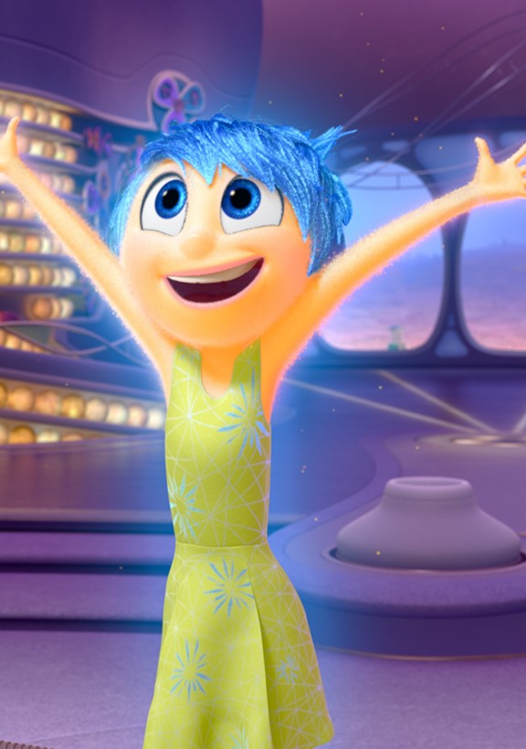

История про школьницу Райли и её эмоции: они выглядят как пять разноцветных человечков, которые сидят за столом и управляют поведением девочки. Как и у любого нормального человека, их пять: Радость, Гнев, Печаль, Страх и Брезгливость.
Однажды Радость и Печаль, которые постоянно конфликтуют, случайно проваливаются в долговременную память. Без этих эмоции Райли начинает вести себя очень странно. И остальным предстоит с этим разобраться.
Персонажи
Райли Андерсен Основной персонаж мультфильма. Она 11 летняя девочка, которая любит хоккей и другие виды спорта. Райли была выдернута из своей счастливой и весёлой жизни в Миннесоте и, вместе со своей семьёй, переехала в Сан Франциско, где и постигает все трудности изменений в её жизни. Её эмоциями являются Радость, Печаль, Брезгливость, Гнев и Страх, которые и помогают ей в это трудное время. Разум Райли – основное место событий.

Радость Она одна из пяти эмоций, которые живут в сознании Райли и очень старается, чтобы Райли была всегда счастлива и радостна; является лидером или энтузиастом группы. Она и другие эмоции контролируют мысли и чувства Райли.Радость желает видеть свою хозяйку постоянно счастливой и весёлой, а так же всегда имеет особые задания для остальных эмоций, кроме Печали. Заблудившись в сознании Райли, они, буквально, исследуют все её воспоминания, пытаясь добраться до «дома». У Радости светло-янтарная кожа, короткие небесно-голубые волосы, небесно-голубые брови, синие глаза и розовые губы, она носит желтое платье с небесно-голубыми снежинками и 2 фута ростом.
Печаль Является одной из пяти эмоций, проживающих в разуме Райли Андерсон. Печаль не знает своей роли, впрочем как и другие эмоции. Грусть появилась при рождении Райли через 33 секунды после того, как Радость нажала на кнопку. После этого Радость вдруг видит, что Райли заплакала из-за того, что появилась новая эмоция - Печаль, которая нажала на пульт. У Печали светло-синяя кожа, средней длины синие волосы, синие брови и ультрамариновые глаза. Она носит белый свитер, темно-синие брюки, темно-синие тапочки и темно-фиолетовые очки.
Гнев Гнев, как и все, обитает в разуме Райли и, вместе с остальным эмоциями, контролирует её поведение и чувства. Когда Радость и Печаль в буквальном смысле теряются в воспоминаниях хозяйки, он и остальные два члена команды остаются в «штабе», следя за происходящим. Гнев является вторым, после Радости, персонажем, кто плохо относится к Печали. Гнев имеет свежо-красную кожу колючие оранжевые волосы, красные брови и красные глаза. Он носит белую футболку с красно-серым галстуком, коричневые брюки и черные ботинки.
Брезгливость Брезгливость - одна из пяти эмоций, управляющих и следящих за своей хозяйкой — Райли. Брезгливость отталкивает Райли от отравления (физического и социального.) Она появилась, когда Билл Андерсон кормил Райли брокколи. Брезгливость нажала на пульт и Райли отвергла тарелку с брокколи. Когда Райли и её родители переезжают в Сан-Франциско, всё начинает идти в плохую сторону: у отца Райли нету времени на неё, их новый дом мрачен и ужасен, в городе делают ужасную пиццу с брокколи, а фургон с их вещами не приедет ещё долгое время. У брезгливости светло-зеленая кожа длинные зеленые волосы и ресницы, зеленые брови и зеленые глаза. Она носит зеленое платье с белыми и голубыми цветами, темно-зеленые шорты, розовые балетные туфли и фиолетовый шарф.
Страх Страх — эмоция, проживающая и работающая вместе с четырьмя остальными эмоциями в разуме Райли Андерсон. Страх отвечает за безопасность Райли. Он появился когда Райли бегала по комнате и бежала прямо на электропровод, но Страх нажал на пульт и она перешагнула провод. У Страха светло-фиолетовая кожа, закрученный фиолетовый волос, черные брови, фиолетовые глаза и длинный нос. Он носит светло-синию футболку с длинными рукавами, черно-белый свитер с пурпурным галстуком-бабочкой, темно-фиолетовые брюки и черные ботинки.